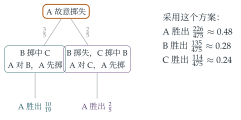

STEP II 1995，第 12 题
继续之前，请先阅读题目（原题为英文）。题目载于 STEP Support Programme 的题目资料库： step.maths.org/questions/95-s2-q12
引子
三个人用餐包决斗。Cuthbert 百发百中，Bertie 每五次掷中三次，而 Algernon 准头最差，每五次只掷中两次。Algernon 先掷。他应该瞄准谁？答案出人意表：谁也不瞄准。他应该故意把餐包掷偏。
原因在于策略。只要三人都仍在场，Bertie 和 Cuthbert 这两个危险的对手就会互相瞄准。假如 Algernon 淘汰了其中一人，余下的那个便会转而对付他。他故意掷失，就能让那两人先行分出胜负，然后由他向幸存者先掷一次。事实上，只要采用最佳方案，准头最差的人反而最有可能胜出。这场“三人决斗”（truel）是博弈论（game theory）中常被引用的例子，说明弱势有时反而是优势。
动笔之前
在一场二人决斗中，Percy 先掷。他要么一掷即中，要么两人都掷失，于是局面完全重演。试写出一条关于 Percy 胜出概率（probability）的方程。
设 \(P\) 为 Percy 胜出的概率。他一掷即中的概率是 \(p\)；否则（概率为 \(1 - p\)）轮到 Rodney 掷，而 Rodney 掷失的概率是 \(1 - r\)，此时局面回到起点。所以 \(P = p + (1 - p)(1 - r)P\)。
逐步解题
阶段 1 二人决斗
解方程，得 \(P\bigl(1 - (1 - p)(1 - r)\bigr) = p\)，而 \(1 - (1 - p)(1 - r) = p + r - pr\)，所以 \[P = \frac{p}{p + r - pr}. \qed\] 若 Algernon（\(p = \frac25\)）对 Bertie（\(r = \frac35\)），由 Algernon 先掷，这个概率是 \(\frac{2/5}{2/5 + 3/5 - 6/25} = \frac{10}{19}\)；若由 Bertie 先掷，Algernon 胜出的概率是 \(\bigl(1 - \frac35\bigr)\cdot\frac{10}{19} = \frac{4}{19}\)。
阶段 2 Algernon 的三个选择
在每种情况下，还剩下谁？下一个轮到谁掷？
Algernon 掷中 Cuthbert。接着由 Bertie 掷，目标是 Algernon。Algernon 要在 Bertie 先掷的二人决斗中胜出：概率为 \(\frac{4}{19}\)。
Algernon 掷中 Bertie。接着由 Cuthbert 掷，目标是 Algernon，而他从不失手。Algernon 的胜出机会是 \(0\)。
Algernon 掷失。Bertie 向 Cuthbert 掷。他有 \(\frac35\) 的概率掷中，剩下 Algernon 和 Bertie，并由 Algernon 先掷：Algernon 胜出的概率是 \(\frac{10}{19}\)。Bertie 有 \(\frac25\) 的概率掷失，然后 Cuthbert 掷中 Bertie，Algernon 便要面对 Cuthbert，而且只有一次出手机会：他必须掷中才能胜出，概率为 \(\frac25\)。合计为 \[\tfrac35\cdot\tfrac{10}{19} + \tfrac25\cdot\tfrac25 = \tfrac{6}{19} + \tfrac{4}{25} = \tfrac{150 + 76}{475} = \tfrac{226}{475} \approx 0.476.\]
阶段 3 建议
如果 Algernon 瞄准 Cuthbert，他可能掷中（概率为 \(\frac25\)），也可能掷失。他整体的胜出机会是多少？试与故意掷失比较。
瞄准 Cuthbert 的胜出概率是 \(\frac25\cdot\frac{4}{19} + \frac35\cdot\frac{226}{475} = \frac{200 + 678}{2375} = \frac{878}{2375} \approx 0.370\)。瞄准 Bertie 则更差。故意掷失的胜出概率是 \(\frac{226}{475} \approx 0.476\)，是三者中最高的。所以 Algernon 应该把餐包掷偏，这样他胜出的概率是 \(\frac{226}{475}\)。■

回顾
重复出现的局面可以列出方程。两人都掷失后，决斗“重新开始”，由此得出一条关于胜出概率的线性方程（linear equation）。
考虑对手的反应。Algernon 的每个选择，都会改变 Bertie 和 Cuthbert 接下来的行动。
比较所有选择，包括甚么都不做。最好的一着，正是看来最差的那一着。
背后的数学
策略与博弈论
三人决斗展示了博弈论的核心思想：最佳行动取决于其他参与者会如何回应。掷中最危险的对手 Cuthbert 看似理所当然，但这样做会改变局势，反而对 Algernon 不利。在本题中，Bertie 和 Cuthbert 的策略（strategy）是固定的（他们互相瞄准）；在完整的博弈论分析中，每个参与者都会自行选择策略，并且知道其他人也在这样做。这类分析始于冯·诺伊曼（John von Neumann）与摩根斯坦（Oskar Morgenstern）在 1944 年的工作，以及纳殊（John Nash）在 1950 年的工作，如今已成为经济学、演化生物学和政治学的基础。
强大反成弱点
三人决斗中谁会胜出？若 Algernon 采用最佳方案，Algernon 胜出的概率是 \(\frac{226}{475}\)，Bertie 是 \(\frac{135}{475}\)，Cuthbert 是 \(\frac{114}{475}\)。准头最好的人最不可能幸存，因为凡是可以选择目标的人都会瞄准他。同样的规律也见于有多名候选人的选举、企业之间的竞争，以及自然界：最强的竞争者可能成为首个被攻击的目标。Martin Shubik 在 1950 年代把三人决斗引入博弈论，并借此探问：最适者是否必然生存？
思维技巧
选择行动之前，先弄清楚它会怎样改变其他各人面对的局面，以及他们会如何回应。
到了大学，这会发展成博弈论中的逆向归纳法（backward induction）：先分析博弈的终局，再往回推，从而决定最佳的第一步。
延伸练习
Bertie 与 Cuthbert。验证：若 Algernon 故意掷失，Bertie 胜出的概率是 \(\frac{135}{475}\)，Cuthbert 胜出的概率是 \(\frac{114}{475}\)。
准头较好的投手。假如 Algernon 掷中的概率是 \(a\) 而不是 \(\frac25\)，当 \(a\) 取哪些值时，故意掷失仍然是他最佳的第一步？
Bertie 应该瞄准 Cuthbert 吗？已知 Algernon 故意掷失，Bertie 瞄准 Cuthbert 而不瞄准 Algernon，是否对他自己有利？（假设 Cuthbert 的行为不变。）
投掷次数有限的决斗。在一场每人只可掷两次的二人决斗中，求 Percy 胜出的概率，并与不限次数的决斗比较。
延伸阅读
D. Marc Kilgour & Steven Brams，“The truel”，Mathematics Magazine 70 (1997)。一篇浅白易读的三人决斗综述。
Avinash Dixit & Barry Nalebuff，Thinking Strategically（Norton）。写给一般读者的博弈论读物，当中也谈到三人决斗。
Ken Binmore，Game Theory: A Very Short Introduction（Oxford University Press）。